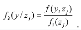

|
3.1. Етапи імітаційного моделювання |
3.2. Принципи побудови моделюючих алгоритмів |
|
В імітаційному моделюванні реального об'єкту (системи) виділяють три
етапи:
• побудова математичної моделі процесу функціонування об'єкту; • комп’ютерна реалізація моделюючого алгоритму; • статистична обробка результатів моделювання. Математична модель є сукупністю співвідношень (рівнянь, логічних умов і тому подібне), що визначають характеристики процесу функціонування системи залежно від її структури, алгоритмів поведінки, параметрів, дій зовнішнього середовища, початкових умов і часу. Побудова математичної моделі процесу функціонування системи зводиться до виконання такої послідовності дій: – постановка задачі моделювання; – вибір незалежних і залежних змінних, характеристик станів і шуканих характеристик процесу функціонування системи; – підбір необхідної інформації про систему і зовнішнє середовище, визначення параметрів системи і збурюючих дій, оцінка їх впливу на процес функціонування системи; – висунення гіпотез про властивості і характеристики системи; – прийняття припущень, що дозволяють спростити математичну модель відповідно до вибраного рівня моделювання; – апроксимація реальних процесів, що протікають в системі, що моделюється; – формалізація функціональних залежностей між змінними, параметрами і характеристиками станів системи; – виведення співвідношень для шуканих характеристик процесу, що моделюється, як функцій характеристик станів, змінних і параметрів системи. На другому етапі імітаційного моделювання математична модель процесу функціонування об'єкту перетвориться в моделюючий алгоритм, який потім програмується і піддається багатократній комп’ютерній реалізації з метою отримання статистичних даних про шукані характеристики модельованого процесу. На цьому етапі виконуються наступні дії: – побудова логічної схеми моделюючого алгоритму; – програмування моделюючого алгоритму; – визначення необхідної кількості реалізацій моделюючого алгоритму, що забезпечують необхідну точність і достовірність результатів моделювання; – проведення робочих розрахунків. Якщо при моделюванні об'єкту враховуються випадкові фактори, то результати моделювання носять ймовірнісний характер. Тому на третьому етапі імітаційного моделювання вони піддаються статистичній обробці з метою визначення наближених значень (оцінок) шуканих характеристик модельованого процесу. |
Процес функціонування системи формально розглядається як послідовна зміна її станів,
описуваних вектором характеристик zj, j = 1,
n, в n - вимірному фазовому просторі Z. Тому завдання моделювання процесу
функціонування системи полягає в побудові функцій часу zj(t),
j = 1,n на основі яких визначаються шукані характеристики процесу, що
моделюється.
Для побудови цих функцій служить математична модель, до складу якої входять співвідношення, що зв'язують характеристики станів системи зі змінними, параметрами і часом. Крім того, для проведення імітаційного експерименту необхідно задати початкові умови функціонування системи, тобто характеристики її стану, в якому вона може перебувати в початковий момент часу t0 : zj(t0), j = 1,n. Якщо розглядати деяку детерміновану систему, яка не піддається випадковим впливам, то стан такої системи в довільний момент часу t > t0 визначається із співвідношень математичної моделі за відомими початковими умовами функціонування модельованої системи. Тому слід перетворити співвідношення математичної моделі до такого вигляду, щоб зробити зручним обчислення характеристик стану zj(t), j = 1,n. Якщо крок △t достатньо малий, то, збільшуючи значення аргументу t згідно з формулою:

і обчислюючи відповідні значення характеристик станів
zj(tk), j = 1, n,
можна побудувати наближену траєкторію руху системи zj(t), j =
1, n у просторі станів Z .
|